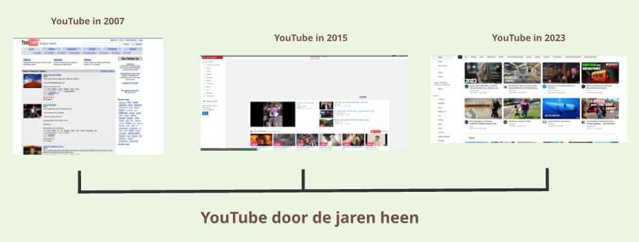
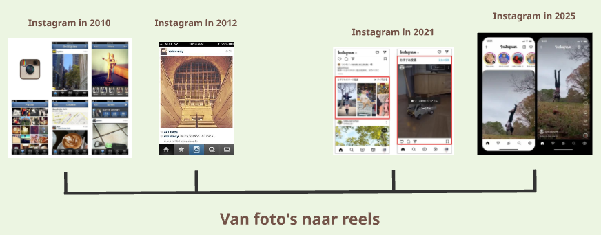

YouTube is een platform dat sinds 2005 online staat. De aller eerste video werd 23 april 2005 geupload op het platform. Het begon als een kleinschalige ontmoetingsplek. Er bestond nog geen term zoals 'Youtuber'. Het publiek had wel zijn twijfels in het begin van YouTube. Je kon namelijk ineens in het leven kijken van andere gebruikers.
De 'goude eeuw' van YouTube zelf was pas rond 2011-2016 als je kijkt naar de statistieken. Dit kwam voornamelijk ook doordat de miljardpijl werd verbroken door de muziekvideo 'Gangnam style' van PSY. Dit werd de aller eerste video op het platform YouTube dat de 1 miljard weergaven behaalde. Wereldwijde trends zoals de 'harlem shake'(2013) en de ice bucket challenge (2014) waarbij de hele wereld, van scholieren tot de Kardashians, meededen aan trends die op Youtube waren ontstaan.
Tegenwoordig is die gouden tijd allang voorbij. Er worden zelfs video's geupload die beweren dat YouTube ten einde is aan zijn tijd. Niemand heeft meer tijd om video's te bekijken die langer dan 5 minuten duren. Het YouTube platform word overspoeld door 'Ai-slop' voor kinderen en je kunt vrijwel onder elke video wel wat bot comments tegenkomen.
Youtube/Fern
Instagram behoort tot een van de meest gebruikte apps ter wereld met een geregistreerde user count van 3,000 miljoen in 2025. Ik zit zelf al op dit platform sinds 2015 tot ik mij zover kan herinneren. Toen werd de app nog vooral gebruikt voor het plaatsen van foto's die alleen over jezelf gingen. Het was net een blog bestaande uit alleen esthetische foto's. Kwa reclame of 30 seconde video's kon je in dit tijdperk eigenlijk helemaal niet vinden. Er werden geen vlogs of skincare reclame geplaatst op dit platform. En aandacht voor politiek of racisme was er al helemaal niet te vinden. Het werd vooral gebruikt om de goede kant van de wereld te laten zien. Gekke filters waren super populair en de term #selfie werd trending op Instagram.
Posten op Instagram is minder populair. Instagram is zo veel veranderd sinds 2020. Na de BLM movement werd er meer aandacht gegeven voor maatschappelijke problemen op het platform. Dit kan ook deels komen doordat iedereen veel tijd spendeerde op het web tijdens de lockdown in coronatijd. Gebruikers verveelden zich, begonnen meer tijd te spenderen op het internet, en zochten allerlei redenen om aandacht te krijgen.
Misschien juist daardoor is Instagram zelf ook gaan veranderen als platform. Een manier om de gebruikers experience te verbeteren door 'reels' toe te voegen in de app. Naast foto's werd er dus ook gestimuleerd om korte video's te uploaden op het platform. TikTok populiseerde het idee van korte video's achter elkaar kijken op 1 platform. Het werd zo populair dat dit volgde bij meerdere apps. En hoe ideaal is het om je berichten, posts van influencers en 'meme' reels op 1 plek te hebben. Zo kun je gelijk de content die jij binnenkrijgt delen naar al je vrienden. En jou vrienden krijgen weer hele andere soort content op hun algoritme, in dezelfde app, die zij weer kunnen delen met jou. Het houd iedereen oneindig bezig waardoor je de app moeilijk kan verlaten, en het wegleggen van je telefoon word een stuk lastiger.